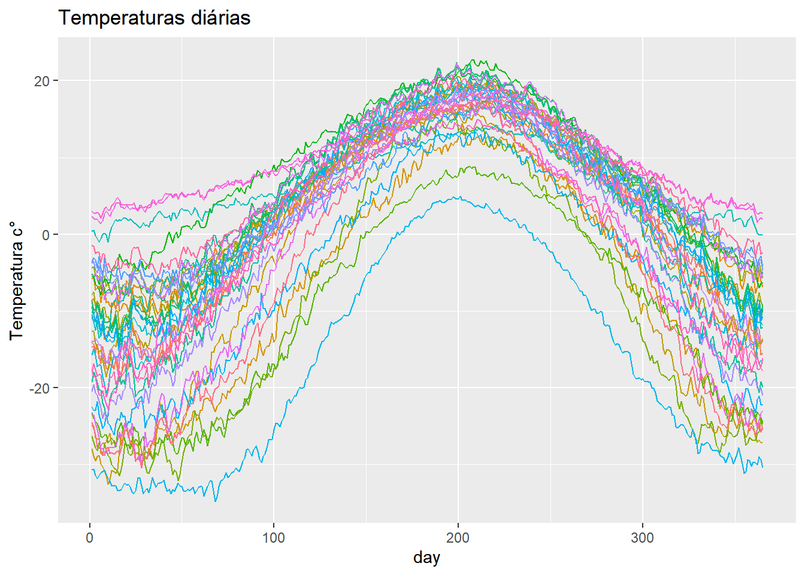

if(!require(pacman)) install.packages(c("pacman", # instalando os pacotes necessários
"tidyverse",
"lme4",
"mgcv",
"refund",
"face",
"fda",
"rgl",
"fields",
"refund.shiny",
"janitor"))Dia-01
Tópicos dia 1:
- Breve descrição dos pacotes utilizados
- Introdução aos dados utilizados
1 Introdução aos Dados Funcionais e longitudinais
Dados Funcionais: Dados funcionais são uma forma de representar informações observadas ao longo de uma dimensão contínua, geralmente o tempo. Em vez de ter observações pontuais em momentos específicos, os dados funcionais registram a evolução de uma variável ao longo de uma curva contínua, muitas vezes representada como uma função. Essa função pode ser descrita por uma série de pontos discretos ou através de uma representação contínua, como uma curva suave. Dados funcionais são frequentemente utilizados em áreas como análise de séries temporais, análise de imagens médicas, processamento de sinais, entre outras.
Dados Longitudinais: Dados longitudinais referem-se a dados coletados repetidamente de um mesmo indivíduo, objeto ou unidade de estudo ao longo do tempo. Nesse tipo de dado, o foco está na observação das mudanças que ocorrem em uma variável ou conjunto de variáveis ao longo de diferentes momentos. Os dados longitudinais permitem analisar tendências, padrões de crescimento, estabilidade ou mudanças em uma população ao longo do tempo. São comumente utilizados em estudos longitudinais, pesquisas de acompanhamento de indivíduos, estudos de coorte e estudos de desenvolvimento, entre outros.
Em resumo, dados funcionais representam a evolução de uma variável em uma dimensão contínua, enquanto dados longitudinais referem-se a observações repetidas de uma mesma unidade de estudo ao longo do tempo. Ambos os tipos de dados são valiosos para análises estatísticas e científicas em diferentes áreas de estudo.
2 Instalando os pacotes que serão utilizados
Carregando os pacotes simultaneamente utilizando o pacote pacman
pacman::p_load(tidyverse, lme4, mgcv, refund, face, fda, rgl, fields, refund.shiny, janitor)Pacotes para estimação dos modelos
lme4- modelos lineares, lineares generalizados, e modelos mistos não linearesmgcv- modelos aditivos generalizados (mistos); suavização semi-paramétricarefund- modelos de regressão usando dados funcionaisface- para estimativa rápida de covariância para dados funcionais esparsosfda- para análise de dados funcionais
Pacotes para manipulação e visualização dos dados
tidyverse- auxilia na importação, organização, manipulação e visualização de dadosrgl- gráficos 3drefund.shiny- gráficos interativos para análise de dados funcionais
3 Dados utilizados no curso
Para este curso, exploraremos e analisaremos os seguintes conjuntos de dados (onde encontrar):
- Dados de imagem de tensor de difusão (“DTI” pacote refund)
- Dados meteorológicos canadenses (“CanadianWeather” pacote fda)
- Dados de crescimento de Berkeley (“growth” pacote fda)
- Dados CD4 (“cd4” pacote refund)
3.1 Dados de imagem de tensor de difusão
Os dados de imagem de tensor de difusão (DTI - Diffusion Tensor Imaging) são amplamente utilizados em estudos sobre esclerose múltipla (EM) e em outras áreas de pesquisa neurocientífica. A DTI é uma técnica de ressonância magnética que permite avaliar a microestrutura e a conectividade das fibras nervosas no cérebro.
Na esclerose múltipla, a DTI pode ser usada para detectar e quantificar as alterações nas propriedades de difusão da água nos tecidos cerebrais. Essas alterações podem ser indicativas de danos ou desmielinização das fibras nervosas, que são características da EM.
Os principais parâmetros medidos na DTI incluem a difusão isotrópica (representada pela medida do coeficiente de difusão isotrópica - ADC) e a difusão anisotrópica (representada pelos valores de fração anisotrópica - FA). A FA é particularmente importante na DTI, pois fornece informações sobre a direcionalidade das fibras nervosas e sua integridade estrutural.
Ao analisar os dados de DTI na EM, os pesquisadores podem investigar as alterações na integridade das fibras nervosas, a presença de lesões ou placas desmielinizantes e o impacto dessas alterações na conectividade e no funcionamento cerebral dos pacientes com EM. Além disso, a DTI também pode ser usada para avaliar a progressão da doença ao longo do tempo e monitorar a eficácia de intervenções terapêuticas.
# Os dados de DTI vem do pacote refund
data("DTI")
names(DTI)[1] "ID" "visit" "visit.time" "Nscans" "case"
[6] "sex" "pasat" "cca" "rcst" Aqui vamos considerar apenas os casos completos, de pacientes com EM em suas prinmeiras visitas.
# filtrando apenas os casos completos ----
DTI2 <- DTI %>%
drop_na() %>%
filter(visit == 1 & case == 1)
# verificando as dimensoes dos dados de CCA
# F1 para mais infomações sobre o formato dos dados
dim(DTI2$cca)[1] 66 93# arrumando os dados para o gráfico ----
DTI2$cca %>%
t() %>%
as_tibble() %>%
janitor::clean_names() %>%
mutate(
tract = 1:93
) %>%
pivot_longer(cols = starts_with("x")) %>%
ggplot(aes(tract, value, group = name, colour = name))+ #gráfico de todos os 66 casos completos
geom_line()+
theme(legend.position = "none")+
labs(x="tract",
y ="Anisotropia Fracionária (AF)",
title = "imagem de tensor de difusão:CCA")# gráfico da média dos dados ----
DTI2$cca %>%
t() %>%
as_tibble() %>%
janitor::clean_names() %>%
mutate(
tract = 1:93
) %>%
pivot_longer(cols = starts_with("x")) %>%
group_by(tract) %>%
mutate(
avg = mean(value)
) %>%
ggplot(aes(tract, value, group = name))+
geom_line(color = "gray")+
geom_line(aes(tract,avg), color = "red",linewidth = 2, linetype = 1)+
theme(legend.position = "none")+
labs(x="tract",
y ="Anisotropia Fracionária (AF)",
title = "imagem de tensor de difusão:CCA")Além das medidas de AF, o conjunto de dados DTI também inclui as pontuações do Teste de Adição Auditiva em Série (PASAT) dos pacientes, que medem suas funções cognitivas. Os gráficos a seguir ajudam a visualizar a relação entre as medições de AF e as pontuações do PASAT, codificadas por cores.
#[code by R. Todd Ogden and Jeff Goldsmith]
tract <- 1:93
colfct <- as.numeric(cut(DTI2$pasat, 40))
par(mar=c(1,1,0,0), cex.axis=1, cex.lab=1)
clrs <- rev(colorRampPalette(c("blue", "green", "yellow", "red"))(40))
proj = persp(x = tract, y = seq(min(DTI2$pasat), max(DTI2$pasat), l=length(DTI2$pasat)), z=t(DTI2$cca),
xlab="tract", ylab="PASAT", zlab="AF", col=NA, border=NA,
ticktype = "detailed", axes=TRUE, theta=30, phi=30)
o <- rev(order(DTI2$pasat))
for(i in o){
lines(trans3d(x = tract, y=rep(DTI2$pasat[i], ncol(DTI2$cca)), z=DTI2$cca[i,], pmat=proj), col=clrs[colfct[i]])
}
Questões de interesse:
3.2 Dados meteorológicos do Canadá
O banco de dados Canadian Weather contém informações sobre as temperaturas e precipitações diárias registradas em 35 estações meteorológicas localizadas no Canadá. Os dados abrangem um período de 365 dias, fornecendo uma série temporal de temperaturas para cada estação (Ramsay and Silverman, 2002).
# Arrumando os dados diários de temperatura para todas as estações
daily_data_temp <- CanadianWeather$dailyAv %>%
as_tibble() %>%
dplyr::select(contains("Temperature")) %>%
rownames_to_column(var = "day") %>%
mutate(
day = as.numeric(day)
)
# Criando o gráfico dos dados de teperatura diária
daily_data_temp %>%
pivot_longer(cols = c(2:ncol(daily_data_temp))) %>%
group_by(day) %>%
ggplot(aes(day,value, color = name ))+
geom_line()+
theme(legend.position = "none")+
labs(x = "day", y = "Temperatura c°", title = "Temperaturas diárias")
# Criando o gráfico com o comportamento médio dos dados
daily_data_temp %>%
pivot_longer(cols = c(2:ncol(daily_data_temp))) %>%
group_by(day) %>%
mutate(
avg = mean(value)
) %>%
ggplot(aes(day,value, group = name))+
geom_line(color = "gray")+
geom_line(aes(day, avg), color = "red", linewidth = 2, linetype = 1)+
theme(legend.position = "none")+
labs(x = "day", y = "Temperatura c°", title = "Temperaturas diárias - c/média")# Arrumando os dados diários de preciptação para todas as estações
daily_data_prec <- CanadianWeather$dailyAv %>%
as_tibble() %>%
dplyr::select(contains("Precipitation")) %>%
rownames_to_column(var = "day") %>%
mutate(
day = as.numeric(day)
)
# Criando o gráfico dos dados de precipitação diária
daily_data_prec %>%
pivot_longer(cols = c(2:ncol(daily_data_prec))) %>%
group_by(day) %>%
ggplot(aes(day,value, color = name ))+
geom_line()+
theme(legend.position = "none")+
labs(x = "day", y = "Precipitação mm", title = "Precipitação diária")# Criando o gráfico com o comportamento médio dos dados
daily_data_prec %>%
pivot_longer(cols = c(2:ncol(daily_data_prec))) %>%
group_by(day) %>%
mutate(
avg = mean(value)
) %>%
ggplot(aes(day,value, group = name))+
geom_line(color = "gray")+
geom_line(aes(day, avg), color = "red", linewidth = 2, linetype = 1)+
theme(legend.position = "none")+
labs(x = "day", y = "Precipitação mm", title = "Precipitação diária c/média")Questões de interesse:
3.3 Dados CD4
As células imunes (células CD4) são tipicamente atacadas pelo HIV (vírus da imunodeficiência humana); A contagem de células CD4 por mm de sangue é um substituto útil da progressão do HIV. O estudo Multicenter Aids Cohort (disponível no pacote de reembolso) coletou as contagens de células CD4 de 366 indivíduos afetados entre -18 e 42 meses desde a soroconversão (diagnóstico de HIV).
data(cd4)
view(cd4)
cd4_tidy <- cd4 %>%
as_tibble() %>%
rowid_to_column(var = "affected") %>%
pivot_longer(cols = 2:62, names_to = "months", values_to = "count-mm" ) %>%
mutate(
months = as.numeric(months)
)
cd4_tidy %>%
group_by(months) %>%
drop_na() %>%
ggplot(aes(months, `count-mm`, group = affected, color = affected))+
geom_line()+
theme(legend.position = "none")
Questões de interesse:
Como as contagens de CD4 variam ao longo do tempo na população, bem como no nível individual?
Descreva as principais direções nas quais as contagens de CD4 variam.
3.4 Dados da maratona de Boston (Kaggle)
Infelizmente eu não encontrei os dados utilizados no curso original, para substituir eu vou utilizar os dados sobre a maratona de Boston. Que como veremos não são o ideal para o proposito do curso.
Descreva os gráficos - como a estratégia de corrida difere entre os corredores?
Perguntas de interesse:
3.5 Dados de Poluentes PM2.5.
O parâmetro PM2.5 se refere a partículas finas em suspensão no ar, com diâmetro igual ou inferior a 2,5 micrômetros (µm). Essas partículas são consideradas pequenas e podem ser inaladas facilmente, penetrando profundamente nos pulmões e até mesmo na corrente sanguínea.
O PM2.5 é uma medida comumente utilizada para avaliar a qualidade do ar e os riscos associados à poluição atmosférica. Essas partículas podem ser geradas por diversas fontes, incluindo a queima de combustíveis fósseis, a poluição industrial, a queima de biomassa, os veículos automotores e as atividades agrícolas.
A exposição prolongada ao PM2.5 tem sido associada a uma série de efeitos adversos à saúde, incluindo problemas respiratórios, doenças cardiovasculares, efeitos neurológicos, além de aumentar o risco de câncer de pulmão. Além disso, o PM2.5 pode contribuir para a formação de nevoeiros e reduzir a visibilidade.
Para monitorar a concentração de PM2.5, são utilizadas estações de monitoramento que coletam amostras de ar e medem a quantidade de partículas presentes. Os dados coletados são geralmente expressos em microgramas por metro cúbico (µg/m³) e são usados para avaliar a qualidade do ar, implementar medidas de controle da poluição e informar o público sobre os níveis de poluição atmosférica.
Em resumo, o parâmetro PM2.5 é uma medida importante para avaliar a poluição atmosférica e os riscos à saúde associados a partículas finas presentes no ar. Sua monitorização contínua é essencial para proteger a saúde pública e tomar medidas efetivas para reduzir a exposição a essas partículas poluentes.
Assim como no caso dos dados da maratona, eu não consegui encontrar os dados usados originalmente no curso. Para substituilos vamos usar os dados disponibilizados na plataforma Keggle referentes as diferentes cidades da china. link para os dados
As informações desse conjunto de dados diferem dos dados usados originalemente! Logo voltaremos a esse conjunto de dados e vamos tentar descobrir quais questões podem ser respondidas ao analisa-lo.
A principio vamos utilizar os dados da cidade de Beijing, onde temos dados registrados em 4 diferentes localidade, de hora em hora, durante todo o ano de 2015.
pm2.5_beijing <- read_csv("pm2.5_dados/BeijingPM20100101_20151231.csv")Rows: 52584 Columns: 18
── Column specification ────────────────────────────────────────────────────────
Delimiter: ","
chr (1): cbwd
dbl (17): No, year, month, day, hour, season, PM_Dongsi, PM_Dongsihuan, PM_N...
ℹ Use `spec()` to retrieve the full column specification for this data.
ℹ Specify the column types or set `show_col_types = FALSE` to quiet this message.pm2.5_beijing %>%
dplyr::filter(year==2015) %>%
mutate(
data_hora = as.POSIXct(paste(year, month, day, hour, sep = "-"), format = "%Y-%m-%d-%H")
) %>%
pivot_longer(cols = contains("PM")) %>%
ggplot(aes(data_hora,value,group=name,color=name))+
geom_line()Warning: Removed 7 rows containing missing values (`geom_line()`).3.6 Dados de crescimento de Berkeley
O conjunto de dados Berkeley Growth Data (também conhecido como Berkeley Growth Study) é um conjunto de dados histórico amplamente utilizado em pesquisas sobre crescimento e desenvolvimento infantil, contendo em alturas de 39 meninos e 54 meninas de 1 a 18 anos e as idades em que foram coletados. Esse conjunto de dados foi coletado como parte do Berkeley Growth Study, que ocorreu na Universidade da Califórnia, Berkeley, durante o século XX.
O Berkeley Growth Data contém informações longitudinais de medidas antropométricas (como altura e peso) de um grande número de crianças desde o nascimento até a idade adulta. As medidas foram coletadas em intervalos regulares ao longo de vários anos, permitindo uma análise detalhada do crescimento e desenvolvimento ao longo do tempo.
data("growth")
view(growth)
# Separando os dados referentes aos meninos
growth_boy <- growth$hgtm %>%
as_tibble() %>%
mutate(
age = growth$age
)
# Separando os dados referentes as meninas
growth_girl <- growth$hgtf %>%
as_tibble() %>%
mutate(
age = growth$age
)
# unificando os dois conuntos e criando uma variável gênero
growth_df <- left_join(
growth_boy,
growth_girl,
by = "age") %>%
pivot_longer(
cols = contains(c("boy","girl")),
names_to = "kids",
values_to = "height") %>%
mutate(
gender = if_else(stringr::str_starts(kids, "boy"), "M", "F")
)
# curva de crescimento
growth_df %>%
group_by(age) %>%
ggplot(aes(age, height, group = kids, color = gender))+
geom_line()# taxa de crescimento
growth_df %>%
group_by(kids, gender) %>%
mutate(
g_rate = c(0,diff(height))
) %>%
ggplot(aes(age, g_rate, group = kids,color = gender))+
geom_line()Questões de interesse:
Como a altura varia em meninos e meninas?
O género tem impacto no processo de crescimento de uma criança?
4 Resumo :
Introdução dos quatro conjuntos de dados com características funcionais (ou longitudinais).
Discutiu possíveis questões científicas para cada conjunto de dados.